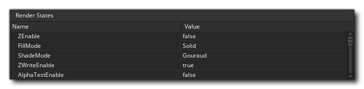
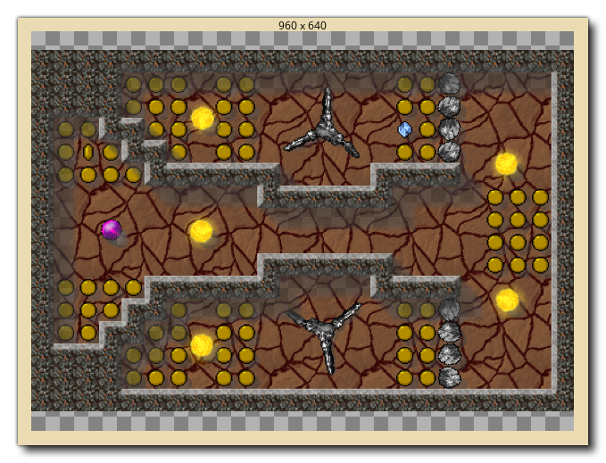

Le débogueur est un outil puissant pour vérifier votre jeu et il est particulièrement utile pour repérer les erreurs et les bogues dans votre code, vérifier que les scripts sont exécutés quand ils le devraient et que les variables et les tableaux contiennent les valeurs attendues... Vous pouvez démarrer le débogueur en lançant votre jeu à partir de GameMaker Studio 2 IDE en utilisant le bouton Déboguer  en haut de l'IDE, ou en allant dans le menu Build et en sélectionnant "Debug".
en haut de l'IDE, ou en allant dans le menu Build et en sélectionnant "Debug".
Lorsque vous exécutez un jeu en mode débogage, l'IDE affichera les différents outils disponibles pour le débogueur: 
L'image ci-dessus montre la disposition par défaut du débogueur, mais comme pour d'autres aspects de l'EDI, vous pouvez personnaliser cela en fonction de vos besoins, en fermant les fenêtres inutiles ou en modifiant la taille des documents et fenêtres dont vous avez besoin. Vous pouvez réinitialiser la mise en page du débogueur à tout moment - ou rouvrir les fenêtres fermées - à partir du menu contextuel du débogueur en haut de l'EDI: 
Ci-dessous, nous expliquons à quoi sert chaque section du débogueur:
La vue graphique vous montre un affichage graphique de la façon dont votre projet utilise la mémoire et son framerate au fil du temps.:
Le graphique montre l'utilisation actuelle et moyenne de la mémoire ainsi que le FPS courant et moyen au fil du temps, et vous pouvez effectuer un zoom avant ou arrière en utilisant le
/
avec la molette de la souris
et si vous positionnez le curseur de la souris sur l'un des éléments du graphique, il vous montrera la valeur de cet élément au point sélectionné.
La vue Graphique affiche également certains événements de débogage en tant que points le long du graphique. Ces événements sont générés automatiquement par GameMaker Studio 2 à certains moments dans l'exécution d'un jeu pour afficher des événements importants spécifiques, mais vous pouvez également ajouter vos propres éléments graphiques en utilisant les fonctions show_debug_message() et debug_event. Les événements système seront marqués d'une couleur différente des événements déclenchés par le code:
Lorsque vous exécutez le jeu dans le débogage et la souris sur ces événements, une liste de tous les événements déclenchés à ce moment dans le jeu s'affiche, et vous avez la possibilité d'extraire la liste dans une fenêtre séparée pour la réviser en cliquant sur " Cliquez pour ouvrir dans une nouvelle fenêtre " le texte:
La vue des ressources vous montre une liste de toutes les ressources utilisées dans le projet pouvant contenir du code ou des actions DnD™. Cette section fonctionne un peu comme l'arborescence des ressources et vous pouvez développer les éléments pour afficher plus d'informations, par exemple, les différents événements pour un objet spécifique. Vous pouvez ensuite double-cliquer
sur l'une des ressources pour ouvrir le code dans la fenêtre Affichage du code, où vous pouvez vérifier les valeurs et ajouter ou supprimer des points d'arrêt.
Cette fenêtre affiche la pile d'appels en cours, ainsi que le numéro de ligne du code parcouru. Le débogueur doit avoir été mis en pause avant que toute information ne soit affichée ici.
La barre d'outils contient les commandes du débogueur ainsi que des informations de base telles que l'utilisation de la mémoire, le FPS actuel pour le jeu et un indicateur indiquant si le débogueur est actuellement connecté ou non (l'indicateur sera vert lorsqu'il est connecté à une instance en cours de votre projet et rouge sinon). Les contrôles disponibles sont:
Cela redémarre le jeu après qu'il a été mis en pause (raccourci clavier f5 ). Cela fera une pause (pause) le jeu. Redémarre le jeu. Arrête le jeu. Entrez dans un bloc de code ou un script (raccourci clavier f11 ). Passer au-dessus d'un bloc de code ou d'un script (raccourci clavier f10 ). Sortez d'un bloc de code ou d'un script (raccourci clavier + f11 ).
Activer ou désactiver les mises à jour en temps réel pour les informations de débogage (cette option est désactivée par défaut). Les trois premiers boutons sont utilisés pour contrôler votre jeu, vous permettant de le démarrer, le mettre en pause, le redémarrer ou l'arrêter à tout moment. Lorsque le jeu est en pause 8 soit en cliquant sur le bouton Pause ou à partir d'un point d'arrêt), vous pouvez ensuite utiliser les trois boutons «étape» pour parcourir votre code. Cela signifie simplement que vous pouvez dire à votre jeu d'exécuter la ligne de code actuelle, puis passer à la suivante, vous permettant de parcourir toute votre partie d'une ligne de code à la fois si vous le souhaitez. Normalement, vous utiliseriez simplement le bouton Step In pour le faire, mais vous en avez également un pour faire un pas sur le code et un pour sortir du code. Le survolage est utile lorsque vous avez de gros scripts à exécuter, car cliquer dessus va exécuter tout le script ou bloc de code en une seule étape et s'arrêter sur la ligne suivante après, tandis que sortir va vous sortir d'un script (ils courront, mais tout à la fois) et s'arrêter à l'étape suivante par la suite lorsque la portée change. L'icône finale permet à la fenêtre de débogage de mettre à jour ses données en temps réel, de sorte que vous pouvez voir comment les variables changent ou si les instances sont créées et détruites lorsqu'elles se produisent. Notez que cela peut affecter les performances des jeux et que toutes les informations ne sont pas disponibles en temps réel. Par exemple, la montre Render State (voir la section sur Watches, ci-dessous) ne peut pas être visualisée en temps réel.
La vue de code est l'endroit où nous pouvons voir et examiner différents scripts ou codes d'événements de notre projet pendant son exécution. Par défaut, cela commence vide, mais vous pouvez double-cliquer
Vous pouvez également utiliser le bouton droit de la souris
pour ouvrir le menu contextuel, qui vous permet également d'ajouter ou de supprimer des points d'arrêt et de copier tout code sélectionné dans le presse-papiers.
Plus d'informations sur BreakPoints peuvent être trouvés plus bas sur cette page.
L'idée du débogueur est de vous permettre de "regarder" chaque détail de votre jeu. Ceci est fait en utilisant des "fenêtres de surveillance" qui, par défaut, sont ouvertes dans la fenêtre de sortie ancrée en bas de l'EDI. Vous pouvez cliquer sur chacun des différents onglets pour voir les montres qu'ils contiennent, dont certaines seront mises à jour en temps réel (comme les montres Global) alors que d'autres (comme les montres locales) nécessiteront que le débogueur ait mis le jeu en pause. Nous avons listé chacune des fenêtres de surveillance ici séparément avec une explication de ce qu'elles font:
La fenêtre Variables locales affiche les propriétés de l'étape en cours, qui incluent le nom de l'événement courant (ou du script) en cours d'exécution, le décalage du code machine virtuel du script en cours (l'acronyme "PC" est "compteur de programme"), "self" instance exécutant le bloc de code, et l'instance "autre" dans l'événement. Cette dernière partie n'est valable que lorsque l'événement est un événement de collision ou qu'il y a un with utilisé dans le code. Si l'instance est en collision, "other" affichera l'autre instance (et ses variables) dans la collision, mais si c'est un with alors l'instance "Self" devient celle qui exécute le code, alors que "Other" est alors l'instance qui contient réellement le with. Dans tous les autres cas, "autre" montrera simplement les mêmes données que "Soi". Après toutes ces informations, vous trouverez ensuite une liste de toutes les variables locales actuellement déclarées pour le bloc de code traversé. Si vous faites un clic droit
La fenêtre Globals affichera une liste de toutes les variables globales déclarées et de leurs valeurs. Si vous faites un clic droit
Cette fenêtre est pour vous d'ajouter une variable spécifique que vous souhaitez suivre. Cela peut être une variable de portée globale ou d'instance, une variable intégrée ou même une structure de tableau ou de données. Si le code d'instance traversé a la variable surveillée, il sera affiché ici, ce qui signifie que vous pouvez facilement suivre une valeur sans avoir à la rechercher dans les fenêtres Locals ou Globals. Si vous faites un clic droit
Comme son nom l'indique, cette fenêtre affiche toutes les variables d'instance, les variables locales et les variables intégrées associées à l'instance en cours d'exécution dans la fenêtre Source (si une instance est référencée à l'aide du mot clé "other" ou with déclaration, alors cette fenêtre montrera les propriétés des instances à la place).
Si vous avez besoin de voir toutes les instances qui sont actuellement dans la pièce, vous pouvez sélectionner cette fenêtre et elles seront listées. Vous pouvez également voir l'état de toutes les variables intégrées ou instances qu'ils ont, et vous pouvez faire un clic droit
Cette fenêtre est pour lorsque vous sélectionnez une instance de votre jeu. Ceci est fait en mettant simplement le jeu en pause puis en cliquant sur n'importe quelle instance visible dans la fenêtre de jeu. L'occurrence trouvée sous le curseur de la souris affichera alors ses informations dans la fenêtre Instance sélectionnée, où vous pourrez voir ses variables intégrées et d'instances, de la même manière que pour la fenêtre Instances.

Cette montre vous montre toutes les informations disponibles pour l'état de l'image en cours de rendu, comme la couleur de dessin alpha ou la couleur de remplissage. Cela ne peut pas être mis à jour en temps réel, vous devrez donc mettre le jeu en pause pour obtenir et mettre à jour les détails du cadre.
Cette montre vous permet de voir exactement ce qui est dessiné sur les surfaces que vous avez dans votre jeu (y compris le application surface ) ainsi que voir les pages de texture qui sont en mémoire. Vous pouvez sélectionner des textures ou des surfaces à partir du bas de la montre, puis passer la souris sur l'ID de texture ou de surface pour l'afficher dans une fenêtre contextuelle. 
Notez que le débogueur doit être mis en veille avant que ceux-ci ne soient mis à jour.
Cette fenêtre est l'endroit où vous pouvez voir le profil du système en cours de test où vous pouvez vérifier tout dans votre jeu d'événements entiers à des appels de fonction individuels pour voir comment ils fonctionnent et repérer les zones de problèmes ou les goulots d'étranglement. Pour plus d'informations sur le profilage, consultez la section plus bas sur cette page.
Si vous avez initialisé des tampons dans votre jeu, alors cette fenêtre vous montrera les données du tampon. Vous pouvez sélectionner n'importe quel tampon créé en définissant la valeur de l' ID de tampon, qui commencera à 0 pour le premier tampon créé dans votre jeu, et augmentera de 1 pour chaque tampon consécutif.
Si vous faites un clic droit


Il est important de noter que pendant que le jeu est en cours d'exécution, il ne met pas à jour les fenêtres de débogage avec des valeurs variables et d'autres détails par défaut, donc vous devez d'abord soit utiliser le bouton Pause dans le débogueur pour mettre le jeu en pause avant que les locales, globales et autres données soient disponibles, ou activer la mise à jour en temps réel à partir des icônes en haut  . La seule exception à cette règle est la vue Profil, qui se met à jour en temps réel lorsqu'elle est activée indépendamment du commutateur en temps réel, car elle possède son propre bouton marche / arrêt.
. La seule exception à cette règle est la vue Profil, qui se met à jour en temps réel lorsqu'elle est activée indépendamment du commutateur en temps réel, car elle possède son propre bouton marche / arrêt.
Types de données
Lorsque vous regardez une variable dans l'une des fenêtres, il peut s'agir de plusieurs types de données. Cependant, en raison de la façon dont GameMaker Studio 2 stocke certaines choses, le débogueur ne sait pas toujours exactement ce que la variable contient. En effet, les valeurs d'ID internes pour les structures de données ou les instances sont des entiers et le débogueur ne sait pas toujours si la valeur entière stockée dans une variable est pour une structure de données ou une instance ou simplement une valeur entière. Pour cette raison, vous pouvez faire un clic droit  sur n'importe quelle valeur de variable et obtenir une fenêtre pop-up qui répertorie les types de données disponibles que cette variable pourrait être.
sur n'importe quelle valeur de variable et obtenir une fenêtre pop-up qui répertorie les types de données disponibles que cette variable pourrait être. 
Les chaînes et les tableaux n'autorisent pas cette option, et il convient de noter que même si une structure de données est stockée dans une variable d'instance, son numéro d'ID est global, donc si vous avez quatre instances et que chacune crée une liste ds_list (par exemple), Chaque liste aura un ID de 0 à 3, et ils ne seront pas tous 0.
Une fois que vous avez sélectionné votre type de données, la variable affiche alors les entrées dans la structure en cliquant simplement sur la petite  à côté de son nom. Cela élargira le contenu des structures et, dans le cas de la fenêtre "Montres", vous permettra de les modifier aussi.
à côté de son nom. Cela élargira le contenu des structures et, dans le cas de la fenêtre "Montres", vous permettra de les modifier aussi.
Points d'arrêt
Un point d'arrêt est un endroit dans votre code de projet auquel vous souhaitez qu'il s'arrête afin que vous puissiez voir ce qui se passe. Avec le débogueur en cours d'exécution, vous pouvez ajouter ou supprimer des points d'arrêt à tout moment et dans n'importe quel bloc de code ou de script en cliquant sur le bouton gauche de la souris.  dans la gouttière (où les numéros de ligne sont), ou vous pouvez utiliser le bouton droit de la souris
dans la gouttière (où les numéros de ligne sont), ou vous pouvez utiliser le bouton droit de la souris  pour ouvrir le menu contextuel, qui vous permet également d'ajouter ou de supprimer des points d'arrêt:
pour ouvrir le menu contextuel, qui vous permet également d'ajouter ou de supprimer des points d'arrêt:
Les points d'arrêt peuvent également être définis à partir de l' GameMaker Studio 2. Lors de l'écriture de votre projet, ils peuvent être ajoutés ou supprimés à tout moment en utilisant f9 (ou en utilisant le bouton droit de la souris  et en sélectionnant "toggle breakpoint"), soit sur une action dans la fenêtre de l'objet, soit sur une ligne dans une fenêtre de l'éditeur de code. Maintenant, quand vous lancez votre jeu en mode débogage, il s'arrêtera au (ou aux) points que vous aurez défini. Les points d'arrêt définis à partir de l'EDI sont sauvegardés avec votre projet et persisteront sur diverses exécutions jusqu'à leur suppression. Toutefois, si vous ajoutez un point d'arrêt à votre code dans le débogueur, celui-ci sera perdu après la fermeture du module ou un nouveau test démarré. Notez que tous les points d'arrêt apparaîtront dans la fenêtre de sortie où ils peuvent être activés ou désactivés ou même supprimés.
et en sélectionnant "toggle breakpoint"), soit sur une action dans la fenêtre de l'objet, soit sur une ligne dans une fenêtre de l'éditeur de code. Maintenant, quand vous lancez votre jeu en mode débogage, il s'arrêtera au (ou aux) points que vous aurez défini. Les points d'arrêt définis à partir de l'EDI sont sauvegardés avec votre projet et persisteront sur diverses exécutions jusqu'à leur suppression. Toutefois, si vous ajoutez un point d'arrêt à votre code dans le débogueur, celui-ci sera perdu après la fermeture du module ou un nouveau test démarré. Notez que tous les points d'arrêt apparaîtront dans la fenêtre de sortie où ils peuvent être activés ou désactivés ou même supprimés.
Profilage
Le débogueur vous permet de parcourir votre code et de trouver des problèmes avec la base de code, mais parfois vous devez vérifier les détails des sous-totaux afin d'optimiser correctement vos jeux. L'option Profil permet de faire exactement cela en vous donnant une vue d'ensemble des performances, en montrant le temps nécessaire pour appeler les fonctions, les scripts, et même combien de temps a duré un événement spécifique. 
En dehors de la fenêtre principale montrant tous les différents événements, scripts et fonctions appelés, vous avez également les options suivantes pour utiliser le profileur:
C'est le bouton pour activer ou désactiver le profileur. Lorsque cette option est activée, le profileur démarre et vous commencez à voir les événements, les scripts et les fonctions dans la fenêtre principale ainsi que différentes valeurs de données pour chacun d'entre eux. La façon dont ces données sont affichées dépendra de l'affichage de l'heure et du mode d'affichage (les deux expliqués plus loin sur cette page).
Cette case à cocher vous permet de basculer entre l'heure moyenne et l'heure absolue pour le profileur. Quand elle n'est pas cochée, les valeurs affichées dans la fenêtre principale seront le nombre total d'appels effectués sur la fonction, le script ou l'événement et le temps total pris (les temps sont en microsecondes ) au cours du profil. Cependant, si vous activez cette option, ces colonnes indiquent le temps moyen pris par étape pour chaque fonction, script ou événement, ainsi que le nombre moyen de fois qu'il a été appelé.
Ce menu vous permet de choisir le mode d'affichage, qui peut être Haut ou Bas.
La sélection du mode d'affichage Top Down affichera le profil de haut en bas (plus ou moins la même chose que la hiérarchie de la pile d'appel) afin qu'il affiche l'événement, puis le script et ensuite toutes les fonctions utilisées. Notez que vous pouvez double-cliquer
La sélection du mode d'affichage Bottom Up affiche les choses de bas en haut pour que vous puissiez voir toutes les fonctions et les appels de script individuellement. Lorsque vous utilisez ce mode d'affichage, cliquez sur le
La vue cible vous permet de choisir entre visualiser le projet GML (données d'événement et de code), les processus du moteur d'arrière-plan ou les deux. Si vous choisissez "GML", les événements, les fonctions et les scripts seront appelés à chaque étape tandis que la vue "Moteur" affichera uniquement les appels moteur requis par le projet, vous permettant de voir les goulots d'étranglement dans la façon dont votre projet est la manipulation des choses. Si vous sélectionnez "Les deux", les deux ensembles de données seront affichés, mais notez que lorsqu'ils sont combinés avec la vue "Bas", les différents appels de script et de fonction seront imbriqués dans les appels moteur et vous devrez cliquer sur le
Les données de profil sont affichées dans quatre colonnes, et en cliquant sur l'une d'entre elles, les données seront triées en fonction des critères de la colonne.

- Nom - Ceci est le nom de l'événement, du script ou de la fonction appelée, et peut avoir un à côté de lui pour indiquer d'autres appels à lui ou à partir de lui (selon le mode d'affichage que vous avez sélectionné). Vous pouvez double-cliquer sur l'un des noms pour l'ouvrir le bloc de code ou le script dans la fenêtre Source. Cliquez sur le haut de cette colonne pour trier les noms par ordre alphabétique.
- Heure - Indique le temps total pris par une fonction (ou un script ou un événement) lors du profilage ou le temps moyen d'appel de chaque étape (en fonction de l'option d'affichage de l'heure sélectionnée). microsecondes.
- Appels - Ici, vous pouvez voir le nombre total d'appels à l'événement, à la fonction ou au script donné, ou le nombre moyen d'appels en une seule étape (encore une fois, en fonction de l'option d'affichage de l'heure sélectionnée).
- Step% - La valeur affichée ici est le pourcentage global d'une seule étape que l'appel a pris.
Vous pouvez exporter les données du profil à tout moment en cliquant avec le bouton droit de la souris  dans la fenêtre et en sélectionnant l'option Exporter vers un fichier. Cela écrira la vue actuelle (après l'expansion de tous les nœuds) dans .csv format, que vous pouvez ensuite charger dans n'importe quelle feuille de calcul, comme Excel par exemple.
dans la fenêtre et en sélectionnant l'option Exporter vers un fichier. Cela écrira la vue actuelle (après l'expansion de tous les nœuds) dans .csv format, que vous pouvez ensuite charger dans n'importe quelle feuille de calcul, comme Excel par exemple.